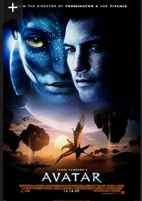
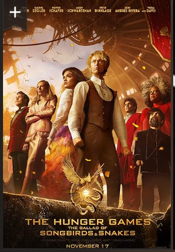
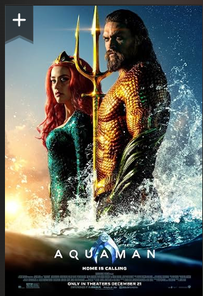

A paraplegic Marine dispatched to the moon Pandora on a unique mission becomes torn between following his orders and protecting the world he feels is his home.
Coriolanus Snow mentors and develops feelings for the female District 12 tribute during the 10th Hunger Games.
Arthur Curry, the human-born heir to the underwater kingdom of Atlantis, goes on a quest to prevent a war between the worlds of ocean and land.
